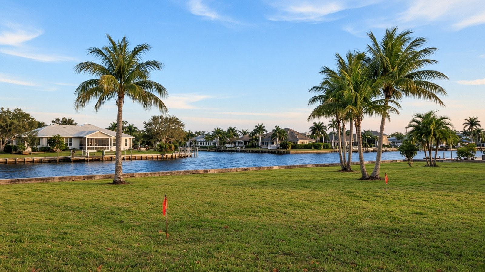

Buying Vacant Land in Punta Gorda

Punta Gorda & Charlotte County, FL
Quick Answer
A lot is only buildable if the paperwork says so.
Before you buy vacant land in Punta Gorda or Charlotte County, confirm zoning and setbacks, whether public sewer or septic applies, the FEMA flood zone, and what the county requires to permit a home. A current signed and sealed survey with flood-zone information is the starting document.
If you are searching for land for sale in Punta Gorda, treat the due diligence as the purchase, and the price as the easy part.
What buyers mean by land in Punta Gorda
A land search in this market can mean several different things. A canal-front lot inside the city, in a neighborhood such as Punta Gorda Isles or Burnt Store Isles, comes with a seawall and a city canal assessment. An inland lot in Punta Gorda, Port Charlotte, or Rotonda West may be a platted lot in a large subdivision with its own association. Acreage outside the platted areas has a different set of questions altogether.
The Punta Gorda ZIP codes cover more than the city. Punta Gorda is the only incorporated city in Charlotte County, and a vacant lot with a Punta Gorda mailing address can be in the city or in unincorporated county. The jurisdiction decides who permits it, and our Punta Gorda real estate guide explains that distinction.
The local permit path, step by step
Charlotte County Community Development publishes the requirements for a new single-family home, and the list is a good map of what to check before you buy. These are the items that most often change whether a lot is a good purchase.
| Charlotte County New Single-Family Permit: What Drives Lot Due Diligence | ||
|---|---|---|
| Item | What the county asks for | Why it matters before you buy |
| Survey | A signed and sealed survey less than one year old, including flood-zone and panel number information and a topographical survey | Shows the true buildable area, easements, and where the flood zone line falls. An older survey may not satisfy the county. |
| Flood zone and elevation | An elevation certificate, prepared by a registered surveyor, if the property is in a Special Flood Hazard Area, submitted during construction and again before final inspections | A flood-zone lot can require higher finished floors and added cost. Get the FEMA zone before you make an offer. |
| Water and sewer | A Charlotte County Utilities application, an approved septic permit from the Florida Department of Health, or a letter from the utility serving the location | Sewer availability or septic feasibility can decide whether the lot works and what it costs to build. |
| Zoning and setbacks | A site plan showing setbacks from the structure to property lines, seawall or mean high water line, and easements, reviewed for compliance with the land development regulations | Setbacks and lot shape determine the size and placement of the house you can build. |
| Natural resources and trees | A review for protected species such as scrub jays and gopher tortoises, and a tree permit review that checks for heritage trees | Wildlife and tree rules can affect where and how you clear and build. |
| Fees and impact fees | A $150 pre-application fee, plus address, zoning, natural resources, tree, and line-and-grade fees at issuance, and impact fees before final inspection | Budget for them. The county's fee page is the source for current amounts. |
Source: Charlotte County Community Development, Residential Single Family permit page, as read on November 10, 2026. Requirements and fees change, so confirm them with the county before you rely on them.
Key Takeaways
- Order a current signed and sealed survey that shows the flood zone and panel number. The county requires one less than a year old for a new single-family permit.
- Confirm sewer or septic early. Charlotte County asks for a utilities application, an approved septic permit from the Florida Department of Health, or a utility letter.
- A property in a Special Flood Hazard Area needs an elevation certificate during construction and before final inspections.
- The county reviews protected species and trees. Heritage trees and species such as scrub jays and gopher tortoises can affect where you build.
- Impact fees are paid before final inspection, and the county lists a $150 pre-application fee. Check the county's fee schedule for current figures.
- An owner-builder permit in Charlotte County must not be used to rent or sell the property within one year of completion.
Sewer, septic, and the July 2026 rule change
Public sewer is not available everywhere, and a lot without it may need a septic system. For a septic lot, a site evaluation determines soil, water table, setbacks, and usable area, and the evaluation must be done by a qualified person. A single-family septic permit is issued by the Florida Department of Health in Charlotte County.
Charlotte County's permit page includes a notice about a change in Florida law effective July 1, 2026. Under the notice, homeowners and builders of a single-family residence may not be required to obtain an approved septic permit from the Department of Health before a building or plumbing permit is issued. They must provide a receipt showing that an application has been submitted, and if construction of the septic system begins before the permit is issued, the owner assumes the legal, financial, and safety liability. That is a procedural change, not a reason to skip the site evaluation. Ask a builder or an attorney how it applies to your lot.
Flood zones, elevation, and what they do to the budget
A lot in a FEMA Special Flood Hazard Area has to be built to meet the county's flood regulations, and the county requires elevation certificates as the house is built. A lot in a regulatory floodway has a stricter test, a No Impact Certification showing the work will not raise flood levels. FEMA's Risk Rating 2.0 then prices the flood insurance for the finished house using factors such as distance to flooding sources, ground elevation, first-floor height, foundation type, and construction.
That chain of requirements is why the flood zone belongs in the first conversation. Ask the seller for any prior elevation data, and get a rough flood-insurance quote for a typical home on the lot before you commit. Costs change and depend on the design, so this guide will not invent a number.
Waterfront lots: seawalls, docks, and canal assessments
A canal lot adds two items to the checklist. First, the seawall. In Punta Gorda Isles and Burnt Store Isles, the city maintains seawalls through canal maintenance district assessments, and the city's figures are about 91 miles of seawall in the Punta Gorda Isles district and about 18 miles in Burnt Store Isles. In other communities, ownership of the seawall differs, so verify it. Second, the dock and lift. Charlotte County requires a construction permit with signed and sealed engineered drawings, a site plan, and a survey for a residential dock or seawall, plus any state or federal approvals that apply. Our waterfront buying guide covers those steps.
Also ask about the cost of building on an old canal lot: a lot platted in the 1960s may have a seawall near the end of its life, and the lot may be a different shape from what a modern plan expects. Ask a builder to review the lot before you close.
Buying land in Punta Gorda: a few local realities
Association and deed restrictions. Large platted communities such as Rotonda West have associations with mandatory assessments and rules that apply to vacant lots, including mowing and upkeep. Ask for the restrictions and the current assessment.
Homestead and taxes. Vacant land does not qualify for homestead exemption until a home is built and is your permanent residence. Ask the Charlotte County Property Appraiser how and when assessments change after construction. Once you live there on January 1 and apply by March 1, the first $25,000 of exemption applies to all property taxes, and Save Our Homes limits annual assessed-value increases to the lesser of 3 percent or the CPI change, which is 2.7 percent for 2026.
Storm history. Hurricane Ian made a second landfall near Punta Gorda on September 28, 2022, according to the National Hurricane Center's final report, and Charley came ashore in the same area in 2004. Both are reasons to ask about elevation, drainage, and wind design early.
Price context. The FHFA house-price index for the Punta Gorda metro area was 391.34 in the second quarter of 2026, down 0.2 percent from a year earlier and 7.7 percent below the second quarter of 2024. It covers houses, not land, so it is a regional reference. Ask for recent land sales with similar zoning, water, and flood zone. When you are ready, the buyers page outlines how the team works, and our guide to South Gulf Cove covers one of the larger platted canal communities.
Frequently asked questions
What should I check before buying vacant land in Charlotte County?
Confirm zoning and setbacks, whether sewer or septic applies, the FEMA flood zone, easements, and what the county requires to permit a home. Order a signed and sealed survey that shows the flood zone and panel number.
Do I need a survey to build in Charlotte County?
For a new single-family permit, the county asks for a signed and sealed survey less than one year old that includes flood-zone and panel information and a topographical survey. Confirm the current requirement with the county.
Is sewer available on every lot?
No. Charlotte County asks for a utilities application, an approved septic permit from the Florida Department of Health, or a letter from the utility serving the location. Confirm which applies to the specific lot before you buy.
What does a flood zone mean for building?
In a Special Flood Hazard Area, the county requires an elevation certificate by a registered surveyor during construction and before final inspections, and the design must meet flood regulations. Flood-insurance pricing then depends on the finished house.
Can I build my own home as an owner-builder?
Charlotte County allows owner-builder permits in some cases, but the owner must not rent or sell the property within one year of completion of the permit. Read the county's owner-builder information before you plan on it.
What is the difference between a canal lot and an inland lot?
A canal lot adds a seawall, a dock, and possibly a canal assessment, along with the boat-access questions. An inland lot is simpler to build on, and the price usually reflects the difference. Ask for recent land sales for each type.
Does vacant land qualify for homestead exemption?
Not until a home is built and is your permanent residence on January 1. After that, you apply with the county property appraiser by March 1. Only the property appraiser determines eligibility.
Talk with The Helgemo Team
If you are looking at vacant land in Charlotte County, talk with a team that can point you to the right questions and the right local professionals before you buy. Call or text The Helgemo Team at (941) 770-2275, or visit the contact page. The office is at 320 Cross Street, Punta Gorda, Florida 33950. You can also meet Brian Helgemo or read more about the team.
Related Reading
- South Gulf Cove: a local living guide
- Rotonda West: what to know before you buy
- Buying a waterfront home in Punta Gorda
- Things you should not do when buying a home
- A Local Guide to Punta Gorda Real Estate
Thinking About Buying or Selling?
If you are buying, selling, or just trying to understand a lot, talk with a team that works this market in person. Call or text The Helgemo Team at (941) 770-2275.
Sources: Charlotte County, Residential Single Family permits; Florida Department of Health in Charlotte County, New Septic System Installation; Charlotte County, Residential Dock permits; Charlotte County, Residential Seawall permits; City of Punta Gorda, Canals; City of Punta Gorda, Canal Maintenance: Punta Gorda Isles; FEMA, NFIP Risk Rating 2.0 pricing approach; Rotonda West Association, Frequently Asked Questions; National Hurricane Center, Tropical Cyclone Report: Hurricane Ian; National Hurricane Center, Tropical Cyclone Report: Hurricane Charley; Florida Department of Revenue, Property Tax Information for Homestead Exemption; Florida Department of Revenue, Save Our Homes; Federal Housing Finance Agency all-transactions House Price Index, Punta Gorda, FL metropolitan area, Q2 2026. This post is general information, not legal or engineering advice. Permit requirements, fees, and state law change, so confirm current requirements with Charlotte County, the Florida Department of Health, and your attorney before you buy. Data and sources reviewed November 10, 2026.